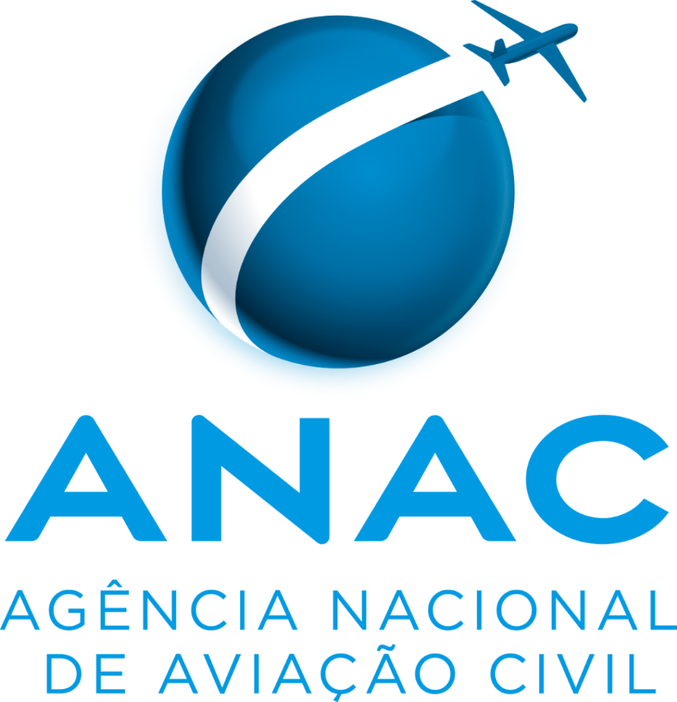
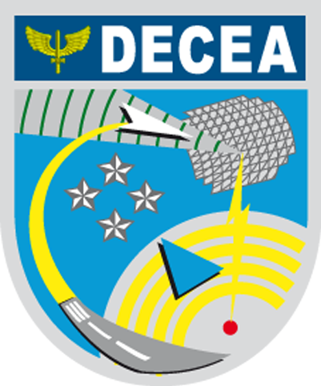
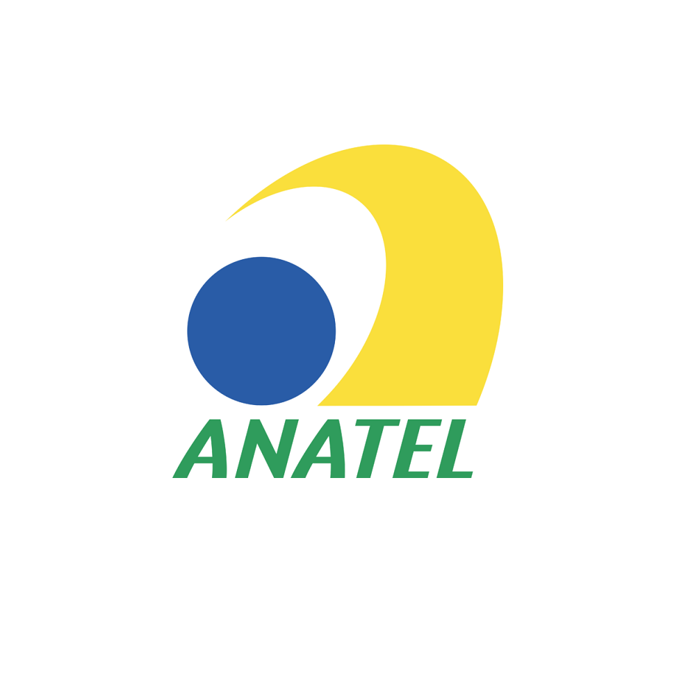
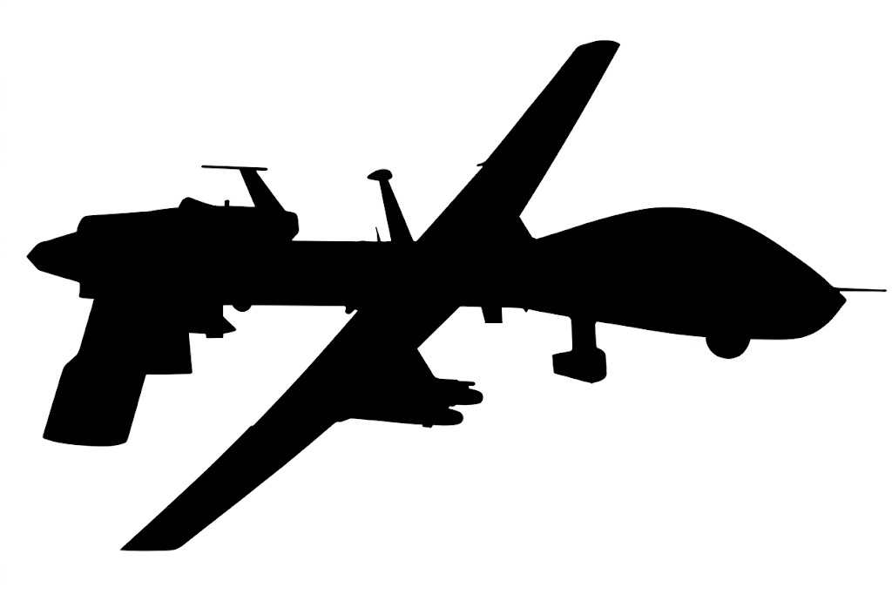
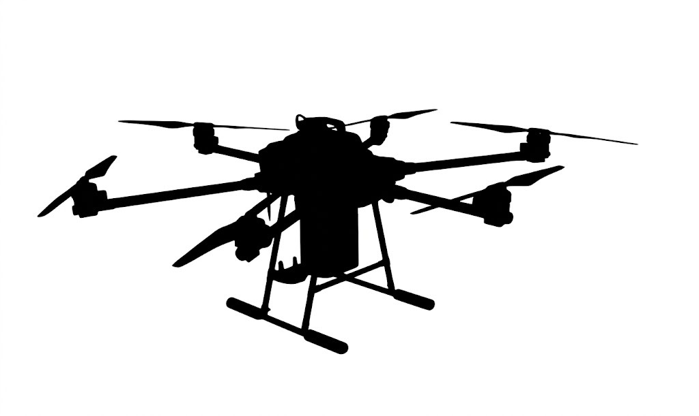
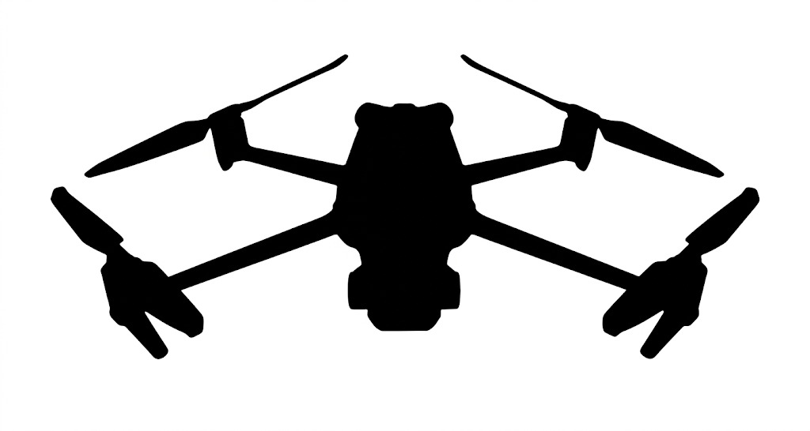
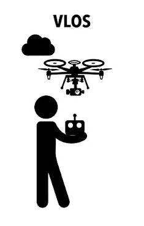
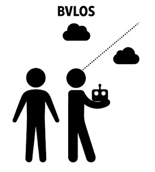
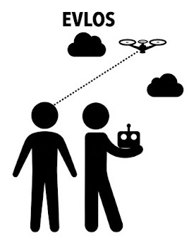
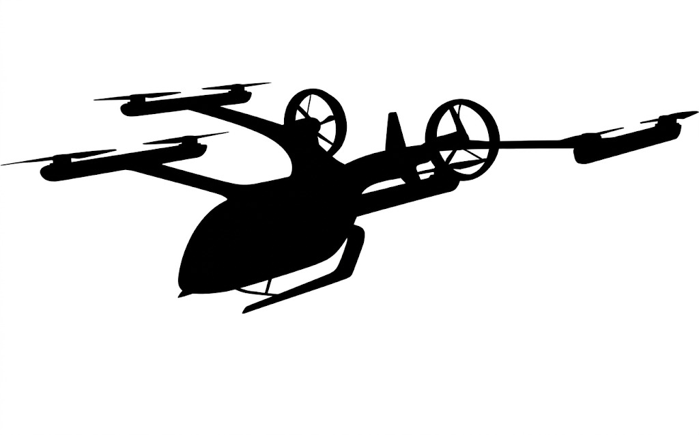

ANAC
A Agência Nacional de Aviação Civil regulamenta aspectos relacionados à aviação civil, incluindo cadastro, classificação e requisitos para operação de aeronaves não tripuladas.
Acessar portal SISANTGuia introdutório sobre operação segura de drones no Brasil
O uso de Aeronaves Remotamente Pilotadas, popularmente conhecidas como drones, exige atenção às normas brasileiras de aviação civil, controle do espaço aéreo e homologação de equipamentos. Este site apresenta, de forma simples e organizada, os principais pontos para operar drones com responsabilidade.
Instituições reguladoras
A operação segura de drones no Brasil envolve diferentes instituições. Cada uma possui uma função específica no cadastro, homologação, autorização de voo e controle do espaço aéreo.

A Agência Nacional de Aviação Civil regulamenta aspectos relacionados à aviação civil, incluindo cadastro, classificação e requisitos para operação de aeronaves não tripuladas.
Acessar portal SISANT
O Departamento de Controle do Espaço Aéreo é responsável por orientar e autorizar o acesso ao espaço aéreo brasileiro por aeronaves remotamente pilotadas.
Acessar portal SARPAS
A Agência Nacional de Telecomunicações atua na homologação dos equipamentos que utilizam radiofrequência, como controles, transmissores e sistemas de comunicação dos drones.
Acessar portal da ANATELClassificação operacional
No Brasil, a ANAC utiliza o peso máximo de decolagem como um dos critérios para classificar as aeronaves remotamente pilotadas.

Classe 1Aeronaves remotamente pilotadas de maior porte, sujeitas a exigências regulatórias mais rigorosas em razão do risco operacional envolvido.

Classe 2Equipamentos de porte intermediário, geralmente associados a operações mais complexas e a requisitos legais e operacionais específicos.

Classe 3Categoria em que se enquadra a maior parte dos drones utilizados para fins recreativos, educacionais, ambientais, cartográficos e profissionais.
Vídeo explicativo
Assista ao vídeo introdutório com orientações gerais sobre o uso correto de drones.
Modalidades de operação
As operações com drones podem variar conforme a finalidade, a distância do piloto, a visibilidade da aeronave e o ambiente de voo.

Operação em linha de visada visual. O piloto mantém contato visual direto com o drone durante todo o voo.

Operação além da linha de visada visual. Exige requisitos específicos, maior controle operacional e análise criteriosa de segurança.

Operação em linha de visada visual estendida, com apoio de observadores para manter a segurança do voo.

Realizado com plano de voo previamente configurado, muito utilizado em mapeamento, fotogrametria e monitoramento ambiental.
Regulamentação brasileira
Para operar drones no Brasil, é necessário considerar três eixos principais: aviação civil, espaço aéreo e telecomunicações.
A ANAC regulamenta o cadastro de aeronaves, as classes de drones, os requisitos para pilotos remotos e as condições de operação recreativa e profissional. O sistema SISANT é utilizado para cadastro de drones conforme os critérios definidos pela agência.
O DECEA estabelece procedimentos para solicitação de acesso ao espaço aéreo, incluindo regras de altitude, distanciamento de aeródromos, áreas restritas, zonas urbanas e operações próximas a pessoas.
A ANATEL atua na homologação de equipamentos que utilizam radiofrequência. Drones, controles remotos e sistemas de transmissão devem atender às exigências de telecomunicações aplicáveis.
O operador deve respeitar a privacidade, a segurança de terceiros, áreas proibidas, restrições de voo, condições meteorológicas e limites técnicos do equipamento utilizado.
Legislação aeronáutica
A ICA 100-40 é uma instrução do DECEA que estabelece procedimentos para o acesso ao espaço aéreo brasileiro por aeronaves não tripuladas. O documento é essencial para operadores recreativos, profissionais, científicos e institucionais.
Orienta os procedimentos para solicitação de acesso ao espaço aéreo, especialmente por meio dos sistemas oficiais do DECEA.
Define cuidados relacionados a pessoas, edificações, aeródromos, áreas restritas e demais elementos sensíveis do espaço aéreo.
Apresenta critérios aplicáveis a operações em linha de visada visual, além da linha de visada e situações com observadores.
Reforça que o operador deve conhecer as regras, planejar o voo, avaliar riscos e respeitar as restrições do espaço aéreo.
Pesquisa científica
As Aeronaves Remotamente Pilotadas têm sido cada vez mais utilizadas em pesquisas acadêmicas, especialmente nas áreas de Geografia, Agronomia, Engenharia, Ciências Ambientais, Cartografia, Geomorfologia e Sensoriamento Remoto.
Produção de ortomosaicos, modelos digitais de superfície e análise de mudanças na paisagem.
Uso de imagens RGB e multiespectrais para análise de vigor vegetal, cobertura do solo e regeneração ambiental.
Avaliação de processos erosivos, voçorocas, encostas, taludes e formas do relevo em alta resolução espacial.
Monitoramento de lavouras, falhas de plantio, estresse hídrico, sanidade vegetal e planejamento produtivo.
Referências sugeridas
Para ampliar a base técnica e acadêmica do site, recomenda-se consultar fontes oficiais e bases científicas confiáveis.